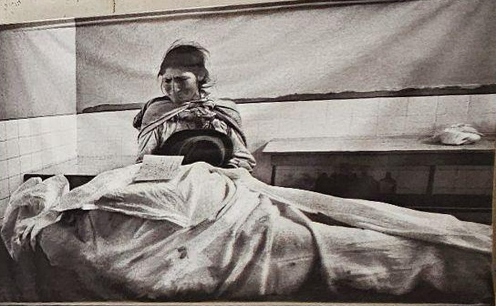
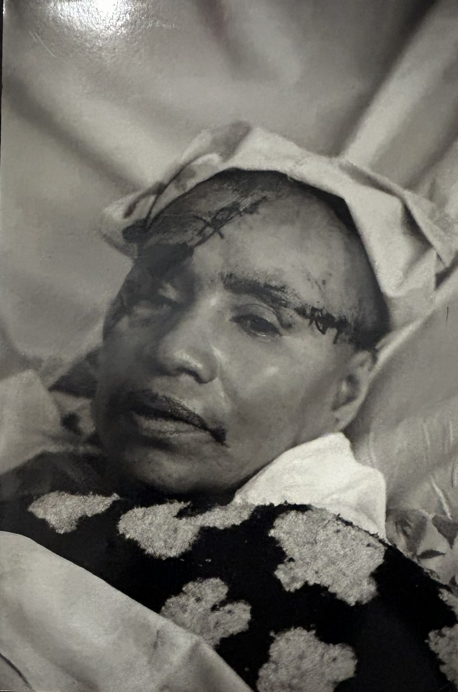

Opinión
Mirar el pasado para no olvidarlo
Una visita a Yuyanapaq demuestra que la fotografía no solo conserva imágenes del pasado, sino también historias de dolor, pérdida y familiares que todavía buscan respuestas.
Por Vivian PatillaMartes 3 de noviembre de 2026
Antes de visitar Yuyanapaq, ya tenía una idea de lo que encontraría. Desde que nos presentaron la exposición, sabía que probablemente sería una experiencia difícil de asimilar. Sin embargo, estar frente a aquellas fotografías fue muy diferente a imaginarlas. Cada imagen mostraba una realidad marcada por la desesperación, el caos y el sufrimiento de personas que, durante los años del conflicto armado interno en el Perú, tuvieron que enfrentar situaciones que ninguna familia debería vivir.
Acompañada de mis compañeros de clase y de un guía que nos explicó detalladamente los acontecimientos, comencé un recorrido que terminó siendo mucho más profundo de lo que esperaba. Las fotografías mostraban personas heridas, familias atravesadas por la pérdida de sus seres queridos y niños que habían quedado desamparados. Observar aquellas escenas me hizo intentar ponerme en el lugar de quienes aparecían en ellas. Por momentos, una pregunta se repetía en mi cabeza: ¿qué hubiera pasado si yo hubiera estado en su lugar?

Entre las imágenes que recuerdo se encontraban una madre reconociendo un cadáver, un sobreviviente de la matanza de Lucanamarca recuperándose en el Hospital Regional de Ayacucho y familiares acompañando a una de las víctimas asesinadas en febrero de 1985 en poblados de la carretera Marginal, en Tingo María. Aunque cada fotografía representaba una historia distinta, todas tenían algo en común: mostraban las consecuencias humanas de una época que dejó profundas heridas en nuestro país.

Sin embargo, hubo un espacio que me impactó especialmente: la sala de testimonios. Allí, las voces de familiares de personas desaparecidas narraban una ausencia que todavía no encuentra respuesta. Escuchar sus testimonios, percibir cómo sus voces se quebraban al recordar a sus seres queridos y sentir la desesperación detrás de sus palabras fue una de las experiencias más difíciles del recorrido.

Fue en esa sala donde permanecí más tiempo. Dejé de pensar únicamente en los acontecimientos históricos y comencé a imaginar lo que significaría perder a un familiar sin saber qué ocurrió con él, dónde está o si algún día volverá a casa. ¿Cómo se puede continuar viviendo con una pregunta que permanece sin respuesta?
Otro aspecto que llamó mi atención fue el propio espacio de la exposición. Imaginaba encontrar un ambiente más elegante o sofisticado, pero fue todo lo contrario. Las paredes de cemento y la iluminación dirigida hacia las fotografías construían una atmósfera sobria, que hacía que las imágenes adquirieran todavía más protagonismo. No se trataba de un espacio que buscara embellecer lo ocurrido, sino de uno que invitaba a detenerse, observar y reflexionar.

Al finalizar el recorrido, comprendí que las fotografías pueden generar una conexión con la historia que difícilmente se consigue únicamente mediante una lectura o una explicación. No son solo registros visuales: son testimonios que permiten acercarnos a una realidad que muchas veces parece lejana hasta que la vemos frente a nosotros.
Yuyanapaq me dejó una reflexión que considero importante compartir: detrás de cada fotografía hay personas, familias y vidas que cambiaron para siempre. Visitar esta exposición es una oportunidad para conocer nuestra historia desde una perspectiva más humana, reconocer el sufrimiento de quienes vivieron aquellos años y, sobre todo, recordar para no repetir los errores del pasado.
◆